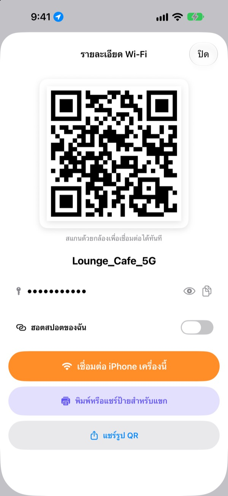
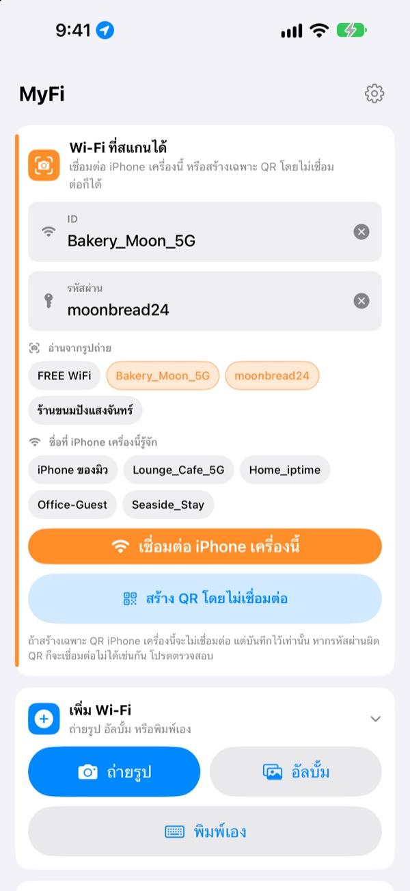
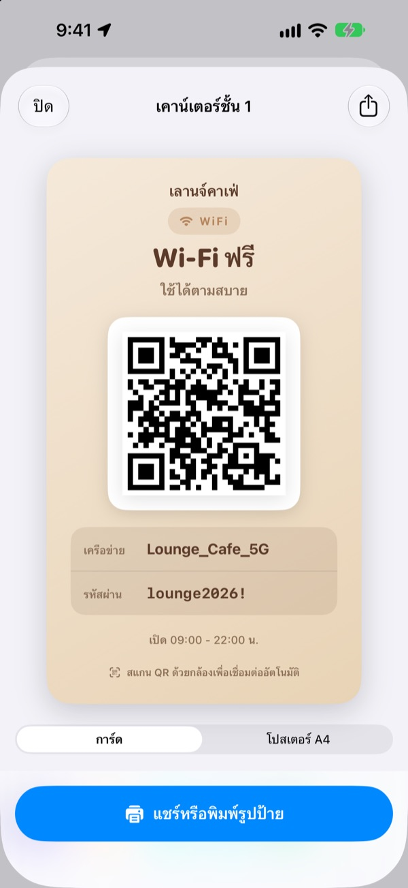
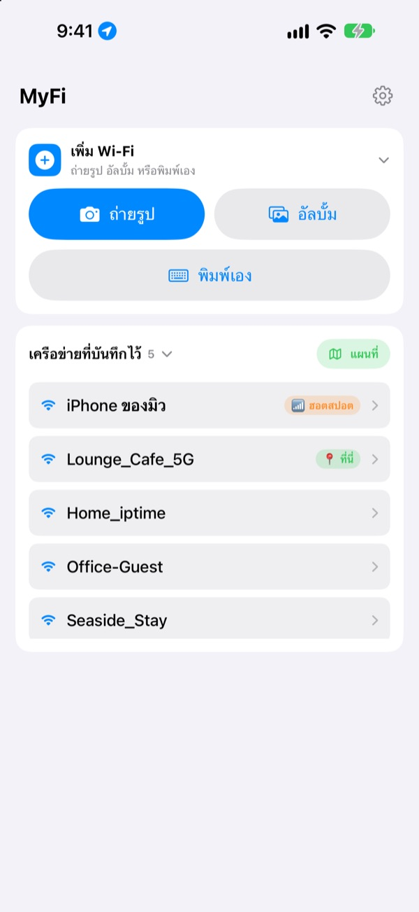

ไม่ต้องบอกรหัสผ่านอีกแล้ว
แค่โชว์ QR
เพื่อนแค่เปิดกล้องส่องก็เชื่อมต่อได้ ป้ายบนผนังร้านกาแฟก็แค่ถ่ายรูปเดียว iPhone เครื่องนี้ก็เชื่อมต่อ ไม่ต้องพิมพ์ผิดตอนลอกรหัสอีก
ใช้ฟรีทุกฟีเจอร์ สำหรับ iPhone ที่ใช้ iOS 17 ขึ้นไป

ลองสร้าง QR ของ Wi-Fi คุณ
เปลี่ยนชื่อหรือรหัสผ่าน ป้ายจะเปลี่ยนตามทันที ลองเอากล้องมือถือส่อง จะมีข้อความชวนให้เชื่อมต่อขึ้นมาจริงๆ
"รหัส Wi-Fi อะไรนะ" วันนี้ถูกถามไปกี่รอบแล้ว
บอกรหัสแล้วตัวพิมพ์เล็กใหญ่ผิด ลอกป้ายบนผนังแล้วสับสน 0 กับ O แล้วก็ต้องอธิบายใหม่อีกรอบ MyFi ทำให้เหลือแค่รูปเดียวกับ QR ใบเดียว
ถ่ายแล้วเชื่อมต่อเลย
ถ่ายรูปป้าย Wi-Fi หรือใบเสร็จ หรือเลือกรูปจากอัลบั้ม MyFi จะอ่านชื่อเครือข่ายกับรหัสผ่านแล้วเชื่อมต่อ iPhone เครื่องนี้ ถ้าบนป้ายมี QR ด้วย จะอ่าน QR ก่อนเพื่อให้ข้อมูลถูกต้องแม่นยำ
ถ้าตัวอักษรไม่ชัด แค่ลากชิ้นส่วนที่ดึงจากรูปไปใส่ช่องชื่อหรือรหัสผ่าน

สร้างป้ายสำหรับแขกแล้วพิมพ์
เลือก 1 ใน 7 ธีม ใส่ชื่อร้าน โลโก้ และข้อความอย่างเวลาเปิดปิด เลือกแบบการ์ดหรือโปสเตอร์ A4 แนวตั้ง บันทึกเป็นรูป หรือพิมพ์ทันทีด้วย AirPrint
ทำป้ายไว้หลายแผ่น แยกตามร้านหรือโต๊ะ แล้วแก้ไขได้ทุกเมื่อ

ที่ที่กลับมาบ่อยขึ้นมาก่อน
Wi-Fi ที่เคยเชื่อมต่อหรือแชร์จะถูกบันทึกพร้อมสถานที่ กลับไปที่เดิมเมื่อไหร่ Wi-Fi ของที่นั่นจะขึ้นมาอยู่บนสุด และดูทุกที่ที่บันทึกไว้บนแผนที่ได้
เอา QR ของ Wi-Fi ที่แชร์บ่อยไปวางเป็นวิดเจ็ตบนหน้าจอโฮมหรือหน้าจอล็อค แขกถามเมื่อไหร่ก็แค่โชว์หน้าจอ

เริ่มได้ในสามขั้นตอน
- 1
เปิดแอป
แอปจะขอสิทธิ์ตำแหน่งครั้งเดียว เพราะ iOS บอกชื่อ Wi-Fi ที่ใช้อยู่เฉพาะแอปที่มีสิทธิ์นี้
- 2
ถ่ายหรือพิมพ์
ถ่ายรูปป้าย หรือใส่รหัส Wi-Fi ของคุณครั้งเดียว
- 3
เชื่อมต่อหรือโชว์
เชื่อมต่อ iPhone เครื่องนี้ หรือเปิด QR ให้กล้องของอีกฝ่ายส่องก็เสร็จ
ทำได้ที่ไหน
- เชื่อมต่อจากรูปป้าย
เพิ่ม Wi-Fiแล้วเลือกถ่ายรูปหรืออัลบั้มจากนั้นแตะเชื่อมต่อ iPhone เครื่องนี้- พิมพ์ข้อมูลเอง
เพิ่ม Wi-Fiแล้วเลือกพิมพ์เอง- สร้างแค่ QR
สร้าง QR โดยไม่เชื่อมต่อ- ส่ง QR ทางข้อความ
- แตะเครือข่ายที่บันทึกไว้ แล้วแตะ
แชร์รูป QR - ป้ายสำหรับแขก
- แตะเครือข่ายที่บันทึกไว้ แล้วแตะ
พิมพ์หรือแชร์ป้ายสำหรับแขก - ทำฮอตสปอตของคุณเป็น QR
- แตะเครือข่ายที่บันทึกไว้ แล้วเปิด
ฮอตสปอตของฉัน - เชื่อมต่อหรือแชร์ในปัดเดียว
- ในรายการ ปัดขวาเพื่อเชื่อมต่อ ปัดซ้ายเพื่อแชร์ QR
- ดูสถานที่ที่บันทึกไว้
แผนที่ข้างเครือข่ายที่บันทึกไว้- วาง QR บนหน้าจอโฮม
- แตะหน้าจอโฮมค้างไว้ แล้วเพิ่มวิดเจ็ต
QR ของ Wi-Fiของ MyFi
เปิด QR ได้ทันทีผ่าน Siri หรือแอปคำสั่งลัดด้วย
ใช้ฟรีทุกฟีเจอร์
ฟรี
- เชื่อมต่อ Wi-Fi จากรูปถ่าย
- สร้าง QR และแชร์เป็นรูปภาพ
- ป้ายสำหรับแขก 7 ธีม แบบการ์ดหรือโปสเตอร์ A4 พิมพ์ด้วย AirPrint
- วิดเจ็ตบนหน้าจอโฮมและหน้าจอล็อค
- แผนที่ Wi-Fi ที่บันทึกไว้
- ไม่มีโฆษณา ไม่ต้องสมัครสมาชิก
ให้ทิป (ไม่บังคับ)
- ถ้าชอบ ให้ทิปเพื่อสนับสนุนการพัฒนาได้
- ทิปไม่ได้ปลดล็อคอะไร ไม่ให้ก็ใช้ได้ทุกฟีเจอร์
ทิปคือการจ่ายเงินเล็กน้อยครั้งเดียว
ไม่มีการสมัครรายเดือนรายปี และไม่มีฟีเจอร์แบบจ่ายเงิน
คำถามที่พบบ่อย
ทำไมต้องพิมพ์รหัสผ่านเอง
ด้วยนโยบายความปลอดภัยของ iOS ไม่มีแอปไหนอ่านรหัส Wi-Fi ที่บันทึกในเครื่องได้ MyFi จึงตรวจชื่อเครือข่ายให้เอง ส่วนรหัสผ่านใส่แค่ครั้งแรก หลังจากนั้นจะใช้ค่าที่บันทึกไว้
ไม่เห็นชื่อ Wi-Fi ที่ใช้อยู่
iOS บอกชื่อ Wi-Fi เฉพาะแอปที่มีสิทธิ์ตำแหน่ง อนุญาต MyFi ได้ที่ การตั้งค่า › ความเป็นส่วนตัวและความปลอดภัย › บริการหาตำแหน่ง ตำแหน่งใช้แค่อ่านชื่อเครือข่ายและจำที่ที่คุณกลับมา
อ่านชื่อหรือรหัสผ่านจากรูปผิด
ถ่ายใกล้ขึ้นและถ่ายให้ตรง ถ้ายังผิด ลากชิ้นส่วนที่ถูกจากรูปไปใส่ช่อง หรือแก้เอง ถ้าป้ายมี QR ของ Wi-Fi MyFi จะอ่าน QR แล้วกรอกข้อมูลให้ถูกต้อง
อ่านป้ายแบบไหนได้บ้าง
อ่านได้ดีที่สุดกับป้ายภาษาอังกฤษหรือเกาหลีที่มีป้ายกำกับอย่าง ID, PW, SSID, Network หรือ Password ถึงไม่มีป้ายกำกับก็หาบรรทัดที่ดูเหมือนรหัสผ่านได้ ส่วน QR ของ Wi-Fi บนป้ายอ่านได้แม่นยำไม่ว่าภาษาอะไร
คนที่ได้ QR ไปจะเชื่อมต่อยังไง
ทั้ง iPhone และ Android แค่ใช้กล้องในเครื่องส่อง QR แล้วแตะข้อความชวนเชื่อมต่อ ไม่ต้องลงแอปอะไร
คนอื่นจะเห็นรหัสผ่านของฉันไหม
QR เก็บข้อมูลเข้า Wi-Fi แบบมาตรฐาน จะแชร์หรือไม่คุณเป็นคนเลือกเสมอ และซ่อนรหัสผ่านบนป้ายสำหรับแขกได้
ทำไมเชื่อมต่อฮอตสปอตของตัวเองไม่ได้
ฮอตสปอตส่วนบุคคลของ iPhone ก็คือมือถือเครื่องนี้เอง จึงเชื่อมต่อกับตัวเองไม่ได้ เปิด ฮอตสปอตของฉัน แล้ว MyFi จะถือว่าเป็น QR ไว้แบ่งให้คนอื่น
ข้อมูล Wi-Fi ของฉันถูกส่งไปไหน
MyFi ไม่มีเซิร์ฟเวอร์ ชื่อเครือข่าย รหัสผ่าน ผลการอ่านรูป และตำแหน่ง ประมวลผลและเก็บไว้ในเครื่องเท่านั้น ไม่มีโฆษณาหรือการติดตาม แอปส่งแค่สถิติการใช้งานแบบไม่ระบุตัวตนและรายงานข้อผิดพลาดไปที่ Apple iCloud เพื่อใช้แก้ไขแอป
ใช้กับอุปกรณ์อะไรได้บ้าง
iPhone ที่ใช้ iOS 17 ขึ้นไป แอปมีให้ใช้ 24 ภาษา
มีคำถามหรือข้อเสนอแนะ ส่งมาที่ leeo@kakao.com ได้เลย ปกติจะตอบภายใน 2 ถึง 3 วัน